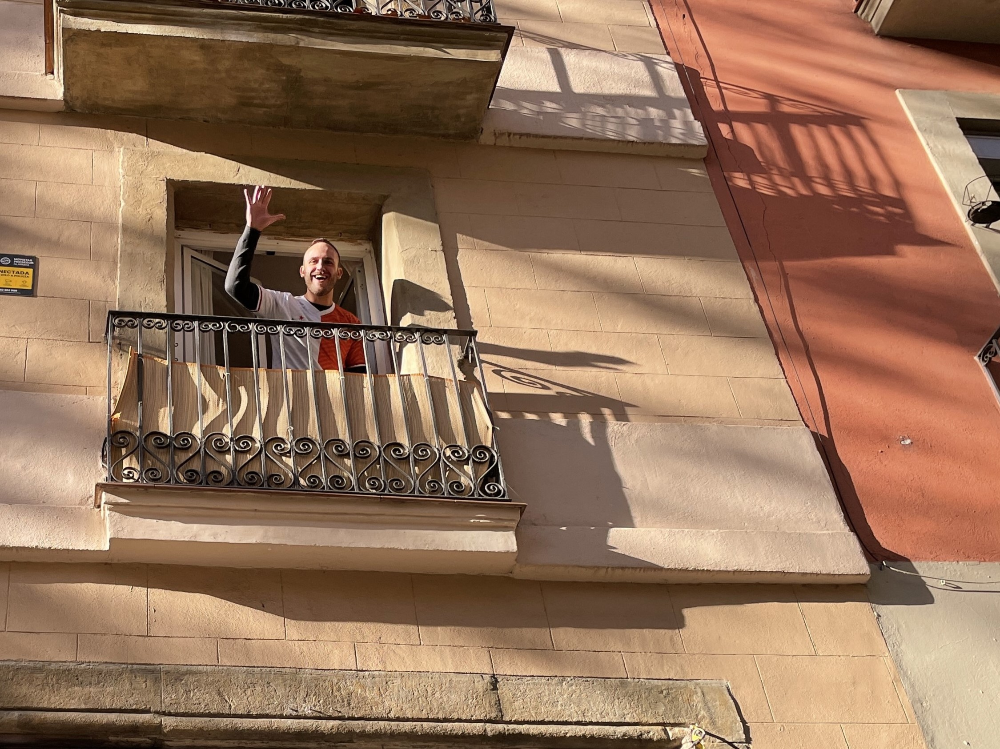

06 At home in Barcelona
Bums at the door,
co-working space gives space,
and introduced the housemates.

Winter has set in. It's swarming with bums here and since this week one has been sleeping right outside our apartment door in a big cardboard box. I really wonder how these people will survive the winter because our non-insulated apartment is shivering after sunset. A woman lives in our apartment with a dog who keeps a close eye on everything. During my first days living in our apartment on Carrer de Llanca, this temperament full aunt blocked my front door and asked in fast Spanish what I was doing. I said of course that I had only just moved there, to which she said, well show me your key. She really showed her teeth at this first acquaintance. Sometimes you just have to get to know people a little better, because now we often have a friendly chat and she seems to consider me one of them. She told me she called the police to send the poor bum away, but that doesn't seem to be possible in this town.
Barcelona is becoming more and more my home, and that's so nice. After a few months I noticed that things were not always going well. Some nights I slept badly or was on my phone until late. At first I didn't really understand where it came from. I had enough opportunities to meet people with the rugby, salsa, hiking and working in bar RAI. But when I had an evening without plans, which I normally enjoy very much, then that was the evening that I really dreaded. I sometimes thought, even alone on a desert island with some books I will probably be able to have a great time. But maybe that is also a pitfall, because after 3 months of working on my laptop in the university library without being able to have a chat with someone in the real world, I noticed that it was starting to break me down. Sometimes it was even super annoying when you see students laughing with each other and actually don't know anyone.
 Until I went to Prague for a weekend with friends, very cosy with the necessary beers, where I spoke to friend Ivo and who said to me, Jorrit I think you should just do that co-working place. That costs a bit more, but then you are also nice among like-minded people. A co-working is a space where different people often work digitally on their own projects. That push in the back came as called. After returning tired but satisfied from the weekend in Prague, I visited Cahoot co-working space in the Sant-Antoni district 10 minutes by bike from home. This co-working space is run by the Norwegian owner Ruby who has transformed a large old garage into a modern office with large wooden desks and comfortable office chairs between all kinds of tropical plants. Here you can really escape the hustle and bustle of the city. You can charge your mobile phone wirelessly, work in focus seats or call rooms and also grab free drinks. It does cost quite a bit of money, which I can't afford to miss at the moment, but it makes life so much more pleasant. Also, for the first time in a long time, I was the youngest somewhere, haha. There's everything there: Start-ups, programmers, web designers, graphic designers, digital educators, video editors and even a guy who makes a living playing poker online. With so many different professions, practiced by people from different countries, it sometimes seems like you are on a journey. The ease of coming and going is once again confirmed by the fact that I sometimes see people walking in with their suitcases.
Until I went to Prague for a weekend with friends, very cosy with the necessary beers, where I spoke to friend Ivo and who said to me, Jorrit I think you should just do that co-working place. That costs a bit more, but then you are also nice among like-minded people. A co-working is a space where different people often work digitally on their own projects. That push in the back came as called. After returning tired but satisfied from the weekend in Prague, I visited Cahoot co-working space in the Sant-Antoni district 10 minutes by bike from home. This co-working space is run by the Norwegian owner Ruby who has transformed a large old garage into a modern office with large wooden desks and comfortable office chairs between all kinds of tropical plants. Here you can really escape the hustle and bustle of the city. You can charge your mobile phone wirelessly, work in focus seats or call rooms and also grab free drinks. It does cost quite a bit of money, which I can't afford to miss at the moment, but it makes life so much more pleasant. Also, for the first time in a long time, I was the youngest somewhere, haha. There's everything there: Start-ups, programmers, web designers, graphic designers, digital educators, video editors and even a guy who makes a living playing poker online. With so many different professions, practiced by people from different countries, it sometimes seems like you are on a journey. The ease of coming and going is once again confirmed by the fact that I sometimes see people walking in with their suitcases.
 Everything feels so much better since I started working from this co-working. I park my bike next to my desk, which is also nice because you don't always have to put two locks on your bike. If you are going to take a break, you can also leave your laptop. The first day I spoke a German. His boss had asked him to look for an alternative workplace because his building in Germany was closed for a month for renovation. Well then I'll be leaving for Barcelona for a month, he had thought. That conversation moved me because I had missed such a pleasant conversation between work. Even if it's only 5 minutes, it gives energy to pick up the work again.
Everything feels so much better since I started working from this co-working. I park my bike next to my desk, which is also nice because you don't always have to put two locks on your bike. If you are going to take a break, you can also leave your laptop. The first day I spoke a German. His boss had asked him to look for an alternative workplace because his building in Germany was closed for a month for renovation. Well then I'll be leaving for Barcelona for a month, he had thought. That conversation moved me because I had missed such a pleasant conversation between work. Even if it's only 5 minutes, it gives energy to pick up the work again.
 I squeezed myself into a rather difficult financial package because I wanted so badly to go to Barcelona but actually had hardly any savings. For the time being, in any case, every euro must be turned over twice. Well there are two sides to this because on the one hand I think it's a very cool experience because I realize how many fantastic things you can do for little money. I have already had some memorable evenings as a bartender in that Spanish local bar where I could practice Spanish and drink free beers. I have the time to do a lot of sports, hiking and reading. But sometimes it sucks because you make friends and what can you do really well here in Barcelona? Going out or enjoying a delicious meal. In the end that will work out because if I can program something better later, there will also be a compensation. It takes a lot of time and energy, but will have to persevere for a while, because even though I'm a bit tight on cash right now, I sometimes joke to myself that because of this career switch I still have the chance to become the new Bill Gates one day.
I squeezed myself into a rather difficult financial package because I wanted so badly to go to Barcelona but actually had hardly any savings. For the time being, in any case, every euro must be turned over twice. Well there are two sides to this because on the one hand I think it's a very cool experience because I realize how many fantastic things you can do for little money. I have already had some memorable evenings as a bartender in that Spanish local bar where I could practice Spanish and drink free beers. I have the time to do a lot of sports, hiking and reading. But sometimes it sucks because you make friends and what can you do really well here in Barcelona? Going out or enjoying a delicious meal. In the end that will work out because if I can program something better later, there will also be a compensation. It takes a lot of time and energy, but will have to persevere for a while, because even though I'm a bit tight on cash right now, I sometimes joke to myself that because of this career switch I still have the chance to become the new Bill Gates one day.
 You can of course also take the pleasant atmosphere at work home with you, where there has recently been more room for a chat or, for example, to fold someone else's laundry if necessary. We have a great time together, which of course also helps that we all started new last September. All rooms of the apartment are now occupied. The first housemate is Tomasso, a 25-year-old Italian boy who studied in Maastricht and now works here for Cratech. Then we have Jessica, a 24-year-old girl from Indonesia who is currently working on her master's degree in sustainable business and in her free time hangs high in the hoops for sports 'areal'. The last housemate is Pouya, a 25-year-old girl of French/Sri Lankan descent, who works in sales for a software company and maintains close ties with her family over the phone. So you can say an international house. The click with Tommaso is particularly special because we have a lot of fun together, understand each other well and can also walk in each others room when any problems arise. Tommaso sometimes joins me going out with people I met here. He has recently joined us on a Qatar’s World Cup match between the Netherlands and Ecuador. We watched the game in an Irish pub that was filled to the brim with Ecuadorians and Dutch. Yesterday Tommaso received his Christmas present from work, a huge leg of veal with kilos of meat worth 200 euros, which was even given to vegetarian employees at work. This would be almost unthinkable in the Netherlands at this time, but you see those pieces of meat everywhere here in Barcelona. With Christmas approaching, we received a beautiful wreath with candles from Tommaso's grandmother by post, which we left burning in the weeks leading up.
You can of course also take the pleasant atmosphere at work home with you, where there has recently been more room for a chat or, for example, to fold someone else's laundry if necessary. We have a great time together, which of course also helps that we all started new last September. All rooms of the apartment are now occupied. The first housemate is Tomasso, a 25-year-old Italian boy who studied in Maastricht and now works here for Cratech. Then we have Jessica, a 24-year-old girl from Indonesia who is currently working on her master's degree in sustainable business and in her free time hangs high in the hoops for sports 'areal'. The last housemate is Pouya, a 25-year-old girl of French/Sri Lankan descent, who works in sales for a software company and maintains close ties with her family over the phone. So you can say an international house. The click with Tommaso is particularly special because we have a lot of fun together, understand each other well and can also walk in each others room when any problems arise. Tommaso sometimes joins me going out with people I met here. He has recently joined us on a Qatar’s World Cup match between the Netherlands and Ecuador. We watched the game in an Irish pub that was filled to the brim with Ecuadorians and Dutch. Yesterday Tommaso received his Christmas present from work, a huge leg of veal with kilos of meat worth 200 euros, which was even given to vegetarian employees at work. This would be almost unthinkable in the Netherlands at this time, but you see those pieces of meat everywhere here in Barcelona. With Christmas approaching, we received a beautiful wreath with candles from Tommaso's grandmother by post, which we left burning in the weeks leading up.
 In a few years I managed to become a salsa dancer from a being a wooden Klaas (Dutch expression). The first salsa basico course is over, where I have met a lot of people with whom I also regularly visit salsa parties outside of the lessons. Last Friday I was with five Spanish speaking people in a salsa club around the corner from me and when I got home it was suddenly already half past six! Isabella and Wendy, whom I still know from Salsa school L'afrique in Wageningen, have decided, just like me, to move to Barcelona and now live near me. Super cool to be able to go to salsa parties with them and also to be able to reminisce about our student days.
In a few years I managed to become a salsa dancer from a being a wooden Klaas (Dutch expression). The first salsa basico course is over, where I have met a lot of people with whom I also regularly visit salsa parties outside of the lessons. Last Friday I was with five Spanish speaking people in a salsa club around the corner from me and when I got home it was suddenly already half past six! Isabella and Wendy, whom I still know from Salsa school L'afrique in Wageningen, have decided, just like me, to move to Barcelona and now live near me. Super cool to be able to go to salsa parties with them and also to be able to reminisce about our student days.
Finally there is the rugby club, where I now train weekly. What a great sport! Every now and then it gets so hard that the bodies fly through the air and I stand on the side watching for a while. But now that I train twice a week, I will pick up the game faster. I have now also watched two rugby matches at the beautiful location 'La Foxarda' near me. I get a super warm welcome and notice that the players really do their best to involve me in the team. For example, Angel, a boy from the team sends 'Siempre eres bienvenido', which means you are always welcome. Fantastic, although I still have a lot to learn. Tack low and then run. The coach is a wonderful authoritarian rugby veteran who you wouldn't dream of going against him. His favourite word is 'Luego', which he really pronounces in Spanish. One word is enough for him to convey the message 'Hombro!!!' (Shoulder) or 'Pantalon!!!' (Pants). At the moment I sometimes feel a bit nervous to go there, but in the longer term, regular sports and making Spanish friends are of course extremely valuable. Life here is becoming more and more automatic here and that also brings a bit of peace. That also brings me to the end of this blog, hope you enjoyed it again.
.jpg)